Jiayi (Jessie) Tong
Jiayi (Jessie) Tong
I am a fifth-year Ph.D. student in the Department of Biostatistics, Epidemiology and Informatics at Perelman School of Medicine at the University of Pennsylvania , where I'm fortunate to be advived by Dr. Yong Chen . Previously, I received a B.S. with High Honors in Applied Mathematics from the University of California, San Diego in 2017.
With an overall theme of clinical evidence generation and evidence synthesis with real-world data (RWD), my research interests span:
Clinical evidence generation using data from distributed research networks
Surrogate-assisted semi-supervised learning
Systematic reviews and meta-analyses
I am also passionate about collaborative research in various fields, including opioid use disorder (OUD), dementia and other aging conditions, acute myocardial infarction, pediatric conditions, mental health disorder, long-COVID, hematology, vaccine effectiveness, health disparity and fairness, and health policy.
Email /
Google Scholar /
Twitter /
Github
Clinical Evidence Generation Using Data from Distributed Research Networks
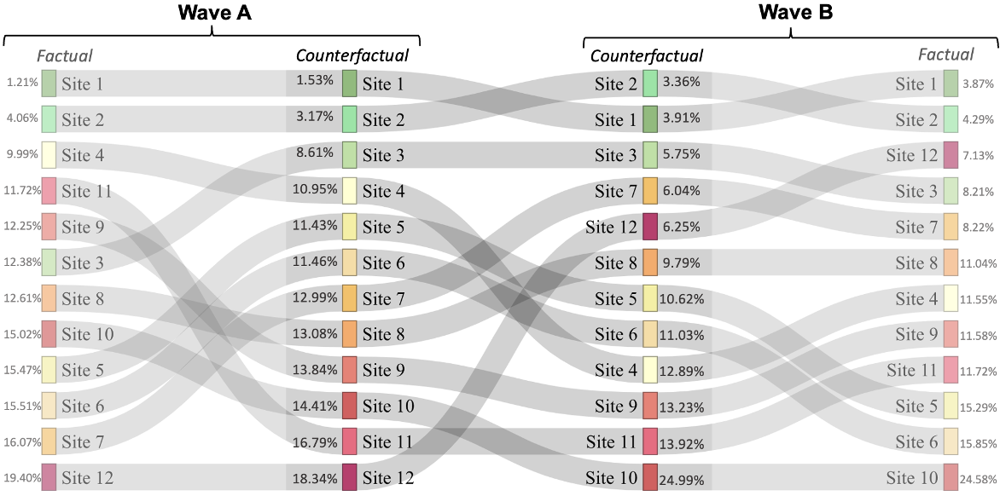
A new end-to-end data aggregation approach for comparing hospital performance without sharing patient-level data
Tong, J. , Reps, J., Luo, C., Schuemie, M., Yan, C., Ryan, P.B., Chu, H., Bian, J., Shenkman, E.A., Lu, Y., Ramirez-Anguita, J.M., Brand, M., Chen, Z., DuVall, S., Falconer, T., Fuentes, A.M., He, K., Li, J., Matheny, M.E., Mayer, M.A., Patel, B., Wang, D., Willilams, R.D., Simon, K., Seager, S., Yang, J., Zhou, Y., Morris, J.S., Wang, F., Stuart, E.A., Krumholz, H.M., Xu, H., Werner, R.M., Suchard, M.A., Lumley, T., Malin, B., Asch, D.A., and Chen, Y.
(2023 JSM Student Award) Github page
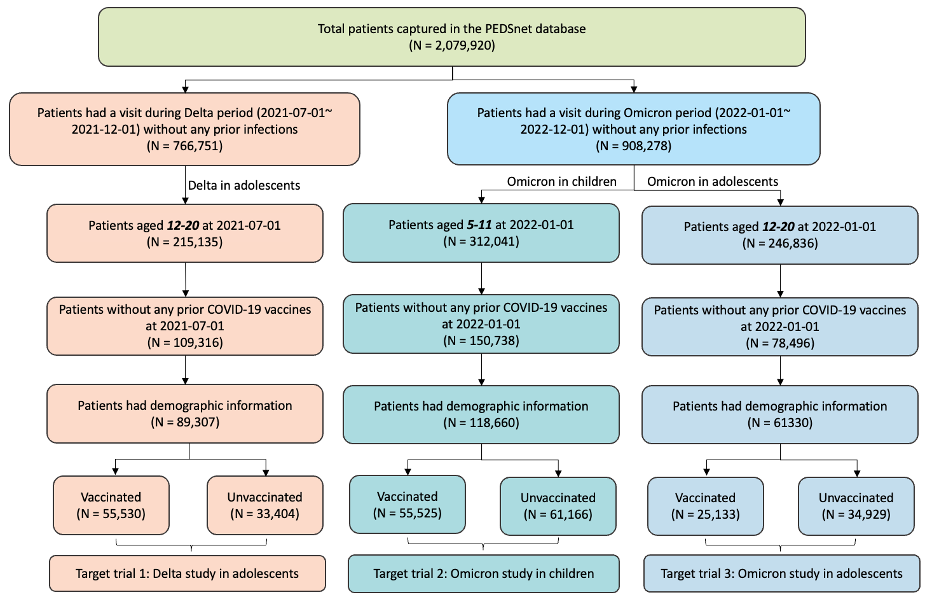
Effectiveness of BNT162b2 in Children and Adolescents against infection and severe disease: Findings from Trial Emulation using an EHR-Based Cohort from the RECOVER Program
Tong, J.* (co-first author) , Zhang, B., Zhang, D., Xu, J., Shen, Y., Bailey, C., Bian, J., Christakis, D., Fitzgerald, M., Hirabayashi K., Jhaveri, R., Khaitan, A., Lyu, T., Rao, S., Razzaghi, H., Schwenk, H., Wang, F., Wigvliet, M., Tchetgen Tchetgen, E., Morris, J., Forrest, C.B., and Chen, Y.
MedRxiv
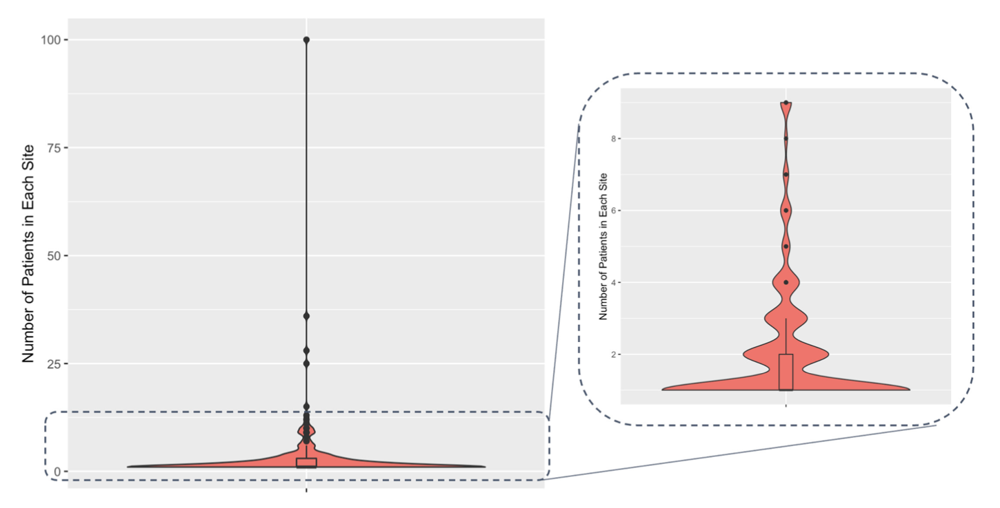
On the proportional likelihood ratio model for sparse data
Tong, J. , Qu, A., Carroll, R., Ning, Y., and Chen, Y.
Invited revision at The Annals of Applied Statistics , 2023
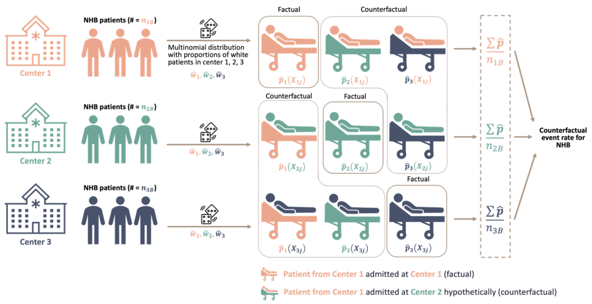
Evaluating Site-of-Care-Related Racial Disparities in Kidney Graft Failure Using a Novel Federated Learning Framework
Tong, J. , Shen, Y., Xu, A., Luo, C., He, X., Edmondson, M., Li, R., Zhang, D., Lu, Y., Chao, Y., Siegel, L., Sun, L., Shenkman, E.A., Morton, S.C., Malin, B.A., Bian, J., Asch, D.A., and Chen, Y.
Invited revision at Journal of the American Medical Informatics Association (JAMIA) , 2023
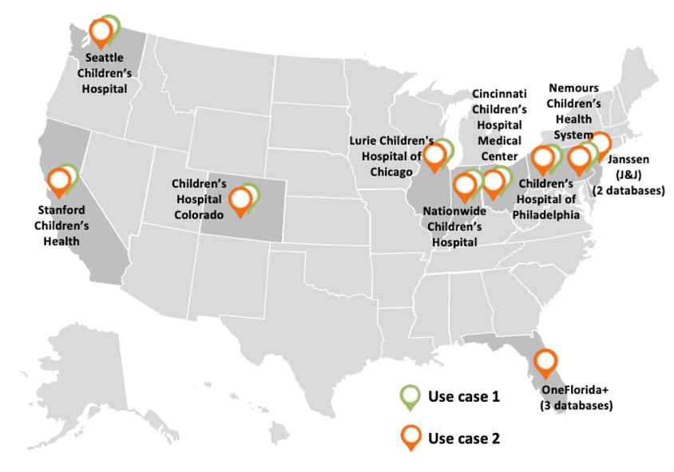
Advancing Interpretable Regression Analysis for Binary Data: A Novel Distributed Algorithm Approach
Tong, J. , Li, L., Reps, J.M., Lorman, V., Jing, N., Edmondson, M., Lorman, Lou, X., Jhaveri, R., Kelleher, K.J., Pajor, N.M., Forrest, C.B., Bian, J., Chu, H., and Chen, Y.
Invited revision at Statistics in Medicine , 2023
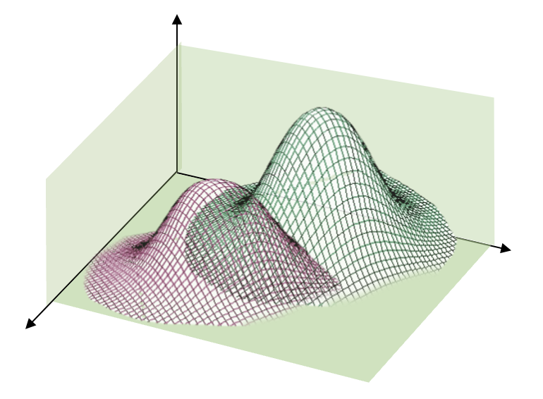
DisC2o-HD: Distributed Causal inference with covariates shift for analyzing real-world high-dimensional data
Tong, J.* (co-first author) , Hu, J.*, Hripcsak, G., Ning, Y., and Chen, Y.
Under review at the Journal of Machine Learning Research , 2023
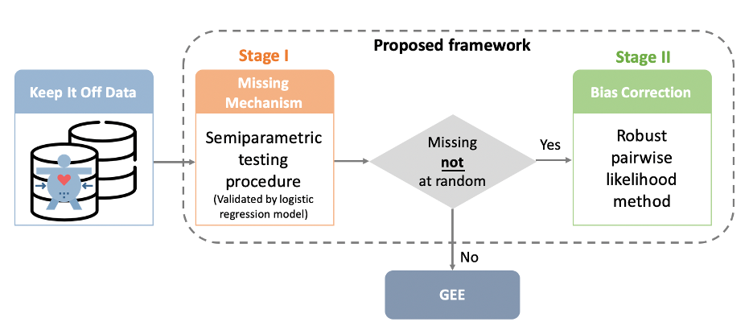
Quantifying and correcting bias due to outcome dependent self-reported weights in longitudinal study of weight loss interventions
Tong, J. , Duan, R., Li, R., Luo, C., Moore. J.H., Zhu, J., Foster, G.D., Volpp, K.G., Yancy, W.S., Shaw, P.A., and Chen, Y.
Scientific Reports , 2023
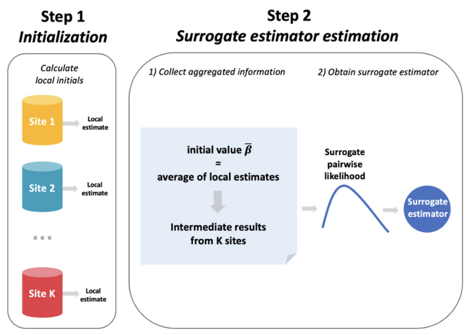
Distributed learning for heterogeneous clinical data with application to integrating COVID-19 data across 230 sites
Jiayi Tong , Chongliang Luo, Md Nazmul Islam, Natalie E. Sheils, John Buresh, Mackenzie Edmondson, Peter A. Merkel, Ebbing Lautenbach, Rui Duan and Yong Chen
npj Digital Medicine , 2022
Paper
/
Github page
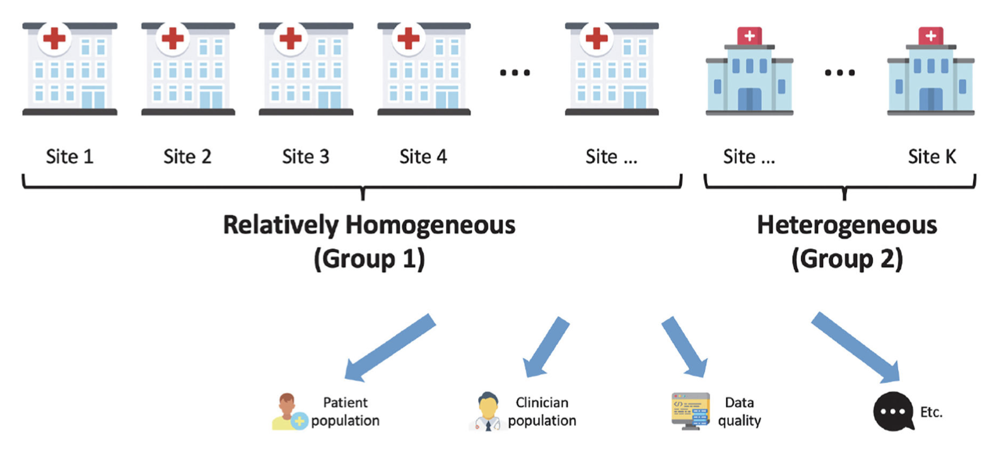
Robust-ODAL: Learning from heterogeneous health systems without sharing patient-level data
Jiayi Tong* (co-first author) , Rui Duan*, Ruowang Li, Martijn J. Scheuemie, Jason H. Moore, Yong Chen
Pacific Symposium on Biocomputing (PSB) , 2020
Paper
/
Github page
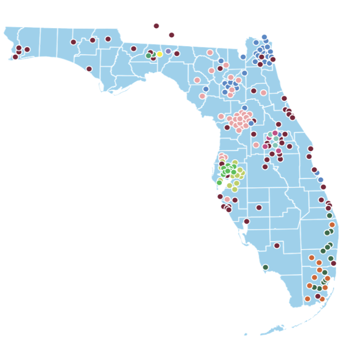
Identifying Clinical Risk Factors for Opioid Use Disorder using a Distributed Algorithm to Combine Real-World Data from a Large Clinical Data Research Network
Jiayi Tong , Zhaoyi Chen, Rui Duan, Wei-Hsuan Lo-Ciganic, Tianchen Lyu, Cui Tao, Peter A. Merkel, Henry R. Kranzler, Jiang Bian, Yong Chen
American Medical Informatics Association (AMIA) Annual Symposium Proceedings , 2019
Paper
/
Github page
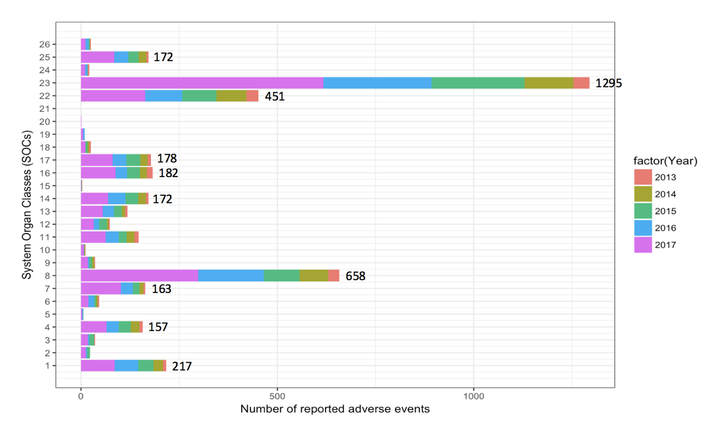
The Use of Likelihood Ratio Test to Identify Rare Adverse Events with Year-varying Reporting Rates for FLU4 Vaccine in VAERS
Jiayi Tong , Huang, J., Du, J., Cai, Y., Tao, C. and Chen, Y.
American Medical Informatics Association (AMIA) Annual Symposium Proceedings , 2018
Paper
Surrogate-assisted semi-supervised learning
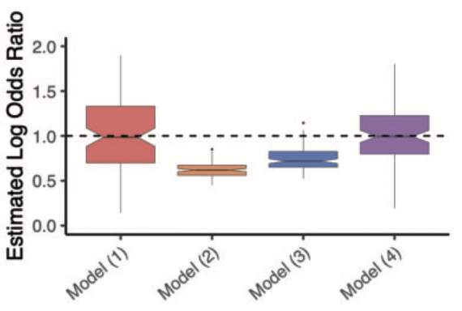
An augmented estimation procedure for EHR-based association studies accounting for differential misclassification
Jiayi Tong , Jing Huang, Jessica Chubak, Xuan Wang, Jason H Moore,Rebecca A Hubbard, Yong Chen
Journal of the American Medical Informatics Association (JAMIA) , 2019
Paper
/
Github page
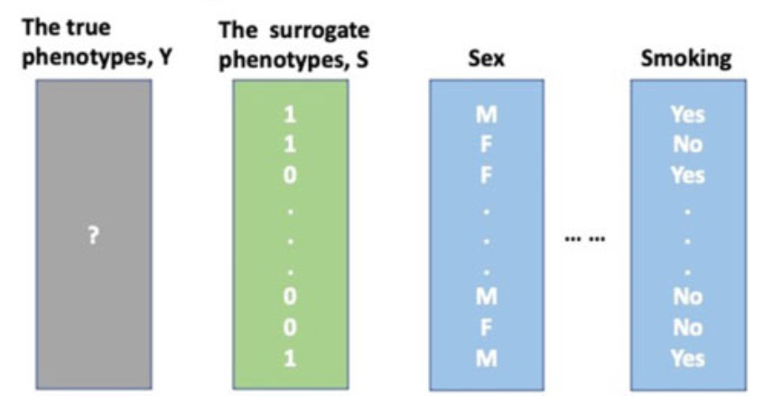
A cost-effective chart review sampling design to account for phenotyping error in electronic health records (EHR) data
Tong, J. , Chen, Y., Hubbard, R.A. and Tang, C.Y.
Journal of the American Medical Informatics Association (JAMIA) , 2021
Paper
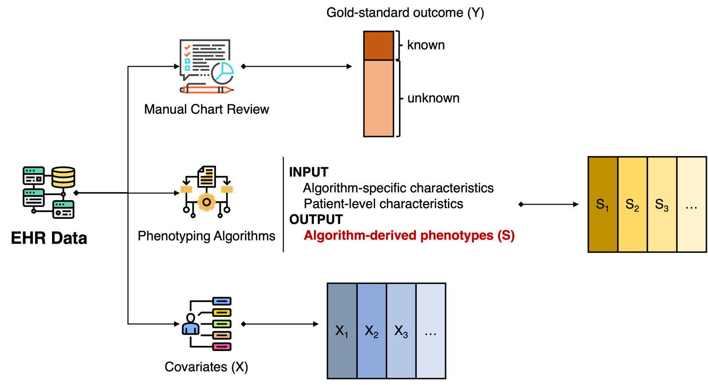
An Augmented Estimation Procedure for EHR-based Association Studies with Multiple Surrogate Outcomes
Tong, J.* (co-first author) , Habbard, R., Chen, Y.
Under review at Journal of the American Medical Informatics Association (JAMIA) , 2023
Systematic reviews and Meta-analyses
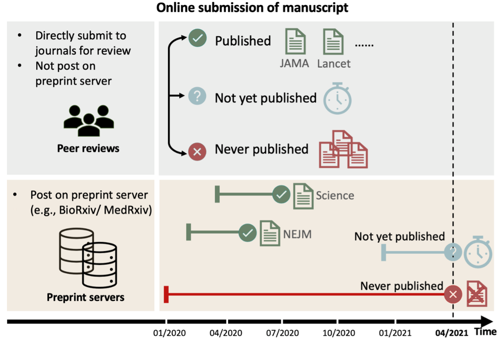
Confidence Score: A Data-Driven Measure for Inclusive Systematic Reviews Considering Unpublished Preprints
Tong, J , Luo, C., Sun, Y., Duan, R., Saine, M.E., Lin, L., Peng, Y., Lu, Y., Batra, A., Pan, A., Wang, O., Li, R., Anglin, A., Yang, Y., Zuo, X., Liu, Y., Bian, J., Kimmel, S.E., Hamilton, K., Cuker, A., Hubbard, R.A., Xu, H., and Chen, Y.
Invited revision at Journal of the American Medical Informatics Association (JAMIA)
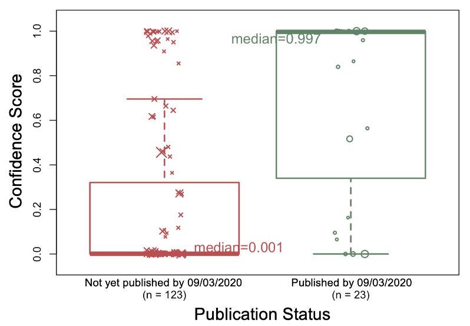
Advancing timely and reliable evidence synthesis in the era of COVID-19: A novel method for including preprints in systematic reviews
Tong, J , Sun, Y., Hubbard, R.A., Saine, M.E., Xu, H., Zuo, X., Lin, L., Weng, C., Schumid, C., Kimmel, S.E., Umscheid, C.A., Cuker, A., and Chen, Y.
Under review at JAMA network open
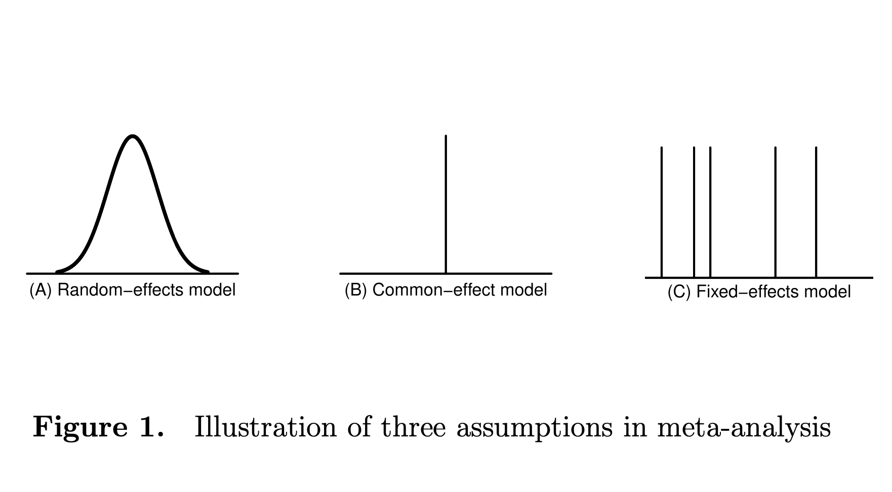
Meta-analysis of Reference Ranges
Tong, J* (co-first author) , Chu, H., Rodondi, N., Baumgartner, C., Cappola, A. , Carroll, R., and Chen., Y.
Under review at Biometrics
{kind=link}